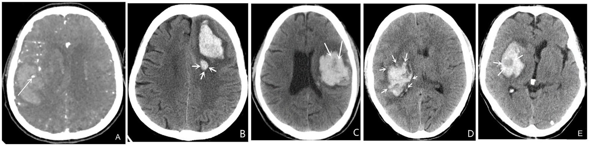
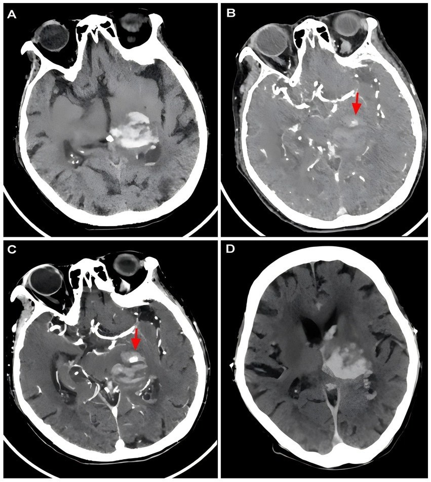

3025 — Đảo ngược kháng đông trong xuất huyết nội sọ cấp: chọn thuốc, liều, dấu hiệu CT và khi nào khởi động lại
Tags: pattern:xuat-huyet-noi-so pattern:dau-hieu-lan-rong-mau-tu vung:nao score:spot-sign score:blend-sign score:ICH-score protocol:CT-so-nao protocol:CTA protocol:dao-nguoc-khang-dong
Mức chắc chắn (certainty): tổng hợp y văn (literature synthesis) — ghép phân tích hậu kiểm ANNEXA-I về dấu hiệu NCCT (PMC13688066), meta-analysis spot sign 2.832 bệnh nhân (PMC13433554), tổng quan dấu hiệu CT + hệ điểm (PMC13349933), ca CT có spot sign → lan rộng (PMC13265560), bảng liều đảo ngược + mốc FDA 22/12/2025 (PMC13110298), tổng quan quản lý kháng đông hậu andexanet (PMC13073382), PCC thực hành trên ICH do Xa (PMC12906014), tổng quan điều trị ICH (PMC13099448), cùng INCH và PATCH (trích abstract gốc), meta-analysis tái khởi động kháng đông (PMC12822325). Nhiều thiết kế khác nhau, không phải một ca → không gắn nhãn ca nguyên văn.
Câu hỏi thực hành: bệnh nhân 78 tuổi dùng apixaban, đột ngột liệt nửa người, CT có ổ máu tụ 25 mL đồi thị — đảo ngược bằng gì, liều bao nhiêu, có mổ không, bao giờ dùng lại thuốc? Bài này chốt theo hai trục: (1) còn bao nhiêu hoạt tính thuốc (quyết định thuốc đảo ngược), và (2) ổ máu còn đang chảy hay đã đông (quyết định có can thiệp hay không). Ngưỡng cụ thể ở mục (4); bẫy chết người ở mục (5). Nối 3022 – Chọc dò ở người dùng kháng đông, 3024 – Chọc dò quanh tiêu sợi huyết, 212 – Xuất huyết sọ: ICH/SAH/SDH/EDH, 201 – Protocol CT/MRI sọ não.
1. Tổng quan bệnh học – cơ chế hình ảnh: vì sao “máu chưa đông” hiện ra thành dấu hiệu trên CT
- Lan rộng máu tụ (hematoma expansion — HE) là biến cố đích. HE xảy ra ở ~20–30% bệnh nhân ICH, chủ yếu trong 3–6 giờ đầu, và gắn chặt với kết cục xấu (PMC13099448). Định nghĩa vận hành hay dùng: tăng > 6 mL tuyệt đối, hoặc > 33% thể tích, hoặc xuất huyết não thất mới; thử nghiệm ANNEXA-I dùng ngưỡng ≥ 12,5 mL hoặc ≥ 35% (PMC13688066).
- TẠI SAO kháng đông tạo ra “máu lỏng” thấy được trên CT: máu tụ bình thường đông trong phút → cục fibrin co lại, đặc, 60–80 HU, bờ rõ. Khi còn hoạt tính kháng đông (hoặc tiêu sợi huyết), fibrin không trùng hợp được → máu chưa đông nằm lại trong ổ, có tỷ trọng thấp hơn và phân bố không đều → trên CT không cản quang xuất hiện vùng giảm tỷ trọng trong ổ máu, mức dịch, hoặc “xoáy” — đó chính là cơ sở vật lý của black hole sign, blend sign, swirl sign, hypodensities.
- Vì sao các dấu hiệu này có giá trị tiên lượng: chúng phản ánh máu còn chảy vào ổ tại thời điểm chụp, không phải “di chứng”. Ngưỡng định lượng hay dùng: blend sign = hai vùng tồn tại cạnh nhau, bờ rõ, chênh > 18 HU; black hole sign = vùng giảm tỷ trọng đóng kín trong ổ tăng tỷ trọng, bờ rõ; island sign = ≥ 3 “đảo” máu nhỏ tách rời (hoặc ≥ 4 nếu tính cả đảo nối một phần); satellite sign = ổ máu nhỏ tách rời ổ chính; swirl sign = vùng giảm/đồng tỷ trọng dạng tròn–dải–không đều trong ổ, đại diện máu chưa đông (PMC13349933). Trong cùng nhóm, island sign có OR mạnh nhất (7,87) cho HE (PMC13349933).
- Con số thực tế trên nhóm kháng đông ức chế Xa: trong 434 bệnh nhân của ANNEXA-I, 72,1% có ít nhất một dấu hiệu NCCT; HE 31,8%; mật độ không đều, hypodensity và black hole sign là yếu tố độc lập với HE (PMC13688066). Nghĩa là dấu hiệu CT dương không phải hiếm, và không được dùng để “trấn an”.
- CTA spot sign: chấm ngấm thuốc trong ổ máu trên CTA. Meta-analysis 10 nghiên cứu, 2.832 bệnh nhân (613 có spot sign): HE OR 7,17 (5,65–9,09), tử vong OR 4,14 (2,45–6,99), kết cục xấu OR 4,06 (2,66–6,20) (PMC13433554). Phản biện: spot sign độ nhạy thấp — âm tính không loại trừ lan rộng, nên nó là dấu hiệu “rule-in”, không phải “rule-out”.
- Vì sao thời gian là biến số chính: thuốc đảo ngược không hồi phục được mô đã chết, chỉ hạn chế máu chảy thêm. Toàn bộ lợi ích nằm trong vài giờ đầu; mọi bước chậm trễ (chờ kết quả đông máu, chờ thuốc từ kho) đều làm mất tác dụng.
2. Mẫu hình + chẩn đoán phân biệt theo nhóm thuốc (gamut)
- Nguyên tắc: chọn thuốc theo cơ chế thuốc, không theo tên thương mại; không chờ xét nghiệm đông máu để bắt đầu ở bệnh nhân đang chảy máu có hội chứng lâm sàng rõ.
- A. Kháng vitamin K (warfarin): thiếu yếu tố II, VII, IX, X → đảo ngược bằng vitamin K IV + 4F-PCC; không dùng FFP nếu có PCC (INCH: INR ≤ 1,2 trong 3 giờ 67% vs 9%; tử vong 19% vs 35%; tử vong do lan rộng máu 0/27 vs 5/23) (INCH, PMID 27302126).
- B. DOAC ức chế yếu tố Xa (apixaban, rivaroxaban, edoxaban): INR/aPTT không phản ánh → đảo ngược bằng PCC liều cao hoặc andexanet; sau 22/12/2025, andexanet đã bị rút khỏi thị trường Mỹ (nguy cơ huyết khối), vẫn lưu hành ở EU/Canada → thực tế nhiều nơi PCC là lựa chọn duy nhất (PMC13110298, PMC13073382).
- C. Dabigatran (ức chế thrombin): có thuốc giải đặc hiệu — idarucizumab 5 g IV; nếu không có → PCC/aPCC hoặc lọc máu (dabigatran thải qua thận, dialyzable) (PMC13110298).
- D. Heparin (UFH/LMWH): protamine (liều theo lượng heparin còn hiệu lực); LMWH chỉ đảo ngược một phần. Không dùng PCC thay protamine.
- E. Kháng kết tập tiểu cầu đơn thuần: không truyền tiểu cầu thường quy — PATCH cho thấy truyền tiểu cầu làm xấu hơn (chết/phụ thuộc aOR 2,05; 1,18–3,56; tử vong trong viện 24% vs 17%) (PATCH, PMID 27178479). Xử trí: ngừng thuốc, kiểm soát HA, cân nhắc can thiệp ngoại khoa như ICH tự phát.
- F. Rối loạn đông máu “nội tại” (xơ gan, DIC, giảm tiểu cầu nặng, urê cao): không có “số INR” để đảo ngược; bù yếu tố đặc hiệu/fibrinogen/tiểu cầu theo huyết học, và nhớ rằng INR cao ở xơ gan không đồng nghĩa giảm khả năng cầm máu.
- G. Ngộ độc/chưa rõ thuốc + ổ máu lớn, chèn ép: ưu tiên kiểm soát đường thở + mổ giải ép song song với đảo ngược — không chờ đảo ngược xong mới mổ (khi đang tụt não).
- Gợi nhớ 5 nhóm: V–X–D–H–P (Vitamin K, Xa, Direct thrombin, Heparin, Platelet).
3. Bảng so sánh phân biệt (ma trận đối chiếu)
| Thực thể (entity) | Hình ảnh / xét nghiệm điển hình | Chốt vào (rule-in) | Chốt loại (rule-out) | Gợi ý xác nhận |
|---|---|---|---|---|
| ICH do warfarin | Ổ máu đơn độc hoặc nhiều ổ, hay gặp ở thùy não; INR ≥ 2,0 | INR ≥ 2,0 + đang dùng warfarin + ổ máu trên CT | INR bình thường, không dùng kháng đông → ICH tự phát | INR ngay tại cấp cứu; 4F-PCC theo INR + vitamin K 5–10 mg IV |
| ICH do thuốc ức chế Xa | Ổ máu, dấu hiệu NCCT dương 72,1%, HE 31,8% trong ANNEXA-I | Đang dùng apixaban/rivaroxaban + ổ máu + anti-Xa hiệu chuẩn cao (nếu có) | Đã quá 3–5 nửa đời thuốc + chức năng thận bình thường → hoạt tính thấp | Hỏi giờ uống liều cuối + CrCl; anti-Xa hiệu chuẩn nếu kết quả sẽ đổi quyết định |
| ICH do dabigatran | Ổ máu; aPTT có thể tăng nhưng không tuyến tính | Đang dùng dabigatran + ổ máu (không cần chờ aPTT) | dTT/ecarin bình thường (nếu có) → hoạt tính thấp | Idarucizumab 5 g; nếu không có → PCC/aPCC/lọc máu |
| ICH trên nền kháng kết tập tiểu cầu | Ổ máu; không có xét nghiệm phản ánh | Đang dùng aspirin/clopidogrel/ticagrelor + ổ máu | Không dùng thuốc nào → không phải nhóm này | Không truyền tiểu cầu thường quy (PATCH: hại) |
| Máu tụ dưới màng cứng cấp (SDH) do kháng đông | Khối liềm bám mặt trong hộp sọ, không qua đường giữa, có thể lệch đường giữa | Chấn thương/đau đầu + khối liềm + đang kháng đông | Tổn thương trong nhu mô, hình cầu → ICH | CT không cản quang; mổ lấy máu nếu dày > 10 mm hoặc lệch > 5 mm |
| Xuất huyết dưới nhện (SAH) | Máu rãnh/bể đáy; đau đầu sét đánh | Máu rãnh + đau đầu đột ngột | Không máu rãnh trên CT tốt + không cứng gáy → ít khả năng | CTA tìm phình mạch; không đảo ngược nếu là SAH do vỡ phình đang hoạt động mà chưa xử lý phình |
| Lan rộng máu tụ (HE) | Tăng > 6 mL / > 33%, hoặc ≥ 12,5 mL / ≥ 35% (ANNEXA-I) trên CT lặp lại; spot sign, blend, black hole, island, satellite, swirl | Bất kỳ dấu hiệu NCCT nào + chụp lại trong 6–24 giờ | Ổ máu đồng nhất, bờ đều, không dấu hiệu, không dùng kháng đông → nguy cơ thấp | CT lặp lại 6–24 giờ (hoặc sớm hơn nếu xấu đi); CTA nếu cân nhắc can thiệp |

Năm dấu hiệu trên CT không cản quang/CTA: (A) spot sign trên CTA (chấm ngấm thuốc trong ổ máu); (B) satellite sign — ổ máu nhỏ tách rời; (C) swirl sign — vùng giảm/đồng tỷ trọng dạng xoáy (máu chưa đông); (D) island sign — nhiều “đảo” máu nhỏ; (E) black hole sign — vùng giảm tỷ trọng đóng kín trong ổ máu. Nguồn: Front Neurol 2026 (PMC13349933) Figure 2, CC BY 4.0. Không crop.Đọc ổ máu tụ trên CT — 5 bước trước khi quyết định đảo ngược
- Thể tích: đo ABC/2 (hoặc planimetry) — ghi mL; ≥ 30 mL ở trên lều là ngưỡng cân nhắc can thiệp (ENRICH dùng 30–80 mL, PMC13099448).
- Vị trí + hiệu ứng khối: thùy (can thiệp ít rủi ro hơn) vs đồi thị/nhân nền (sâu, can thiệp kém lợi); lệch đường giữa (mm), chèn bể đáy, giãn não thất.
- Dấu hiệu “máu còn chảy”: spot sign / blend / black hole / island / satellite / swirl — bất kỳ dấu hiệu nào cũng làm tăng nguy cơ HE.
- Máu vào não thất (IVH): làm nặng tiên lượng và tăng nguy cơ não úng thủy — cân nhắc dẫn lưu não thất.
- Thời điểm so với liều thuốc cuối: quyết định có cần đảo ngược hay chỉ theo dõi.
4. Protocol: dấu hiệu CT + liều đảo ngược + thời điểm mổ
4.1 Ngưỡng hình ảnh và thời điểm chụp lại
- CT không cản quang ngay khi nhập viện (không chờ), + CTA nếu cân nhắc can thiệp/spot sign; CT lặp lại 6–24 giờ hoặc ngay khi xấu đi — HE chủ yếu trong 3–6 giờ đầu.
- Ngưỡng hành động: HE > 6 mL / > 33% (định nghĩa kinh điển) hoặc ≥ 12,5 mL / ≥ 35% (ANNEXA-I) → coi là thất bại cầm máu, xem lại chiến lược.
- Kiểm soát huyết áp: đích SBP < 140 mmHg trong 1 giờ (INTERACT2: n = 2.839, aOR 0,87; 0,75–1,01 — xu hướng có lợi, an toàn); không hạ sâu 110–139 mmHg (ATACH-II: n = 1.000, không lợi về chức năng, tăng biến chứng thận) (PMC13099448).
4.2 Bảng liều đảo ngược (người lớn, ICH cấp)
| Thuốc nền | Thuốc đảo ngược | Liều | Ghi chú |
|---|---|---|---|
| Warfarin (VKA) | 4F-PCC + vitamin K IV | 4F-PCC theo INR: 2–<4: 25 IU/kg; 4–6: 35 IU/kg; >6: 50 IU/kg; hoặc liều cố định 1.500 IU cho ICH. Vitamin K 5–10 mg IV (2–5 mg nếu sắp dùng lại sớm) | 4F-PCC khởi phát 5–15 phút; vitamin K IV khởi phát 1–2 giờ, đạt đỉnh ~24 giờ → luôn dùng cùng nhau (PMC13110298) |
| Apixaban / rivaroxaban / edoxaban | PCC (4F-PCC hoặc aPCC); andexanet nếu có | Liều PCC cho nhóm Xa cao hơn nhóm VKA và khác nhau giữa các phác đồ — chưa có RCT xác định liều tối ưu (PMC13680811) | Andexanet: rút khỏi thị trường Mỹ 22/12/2025 do huyết khối; vẫn ở EU/Canada (PMC13110298) |
| Dabigatran | Idarucizumab | 5 g IV (2 × 2,5 g) | Nếu không có: PCC/aPCC hoặc lọc máu (thuốc thải qua thận) |
| UFH / LMWH | Protamine | Liều theo lượng heparin còn hiệu lực | LMWH chỉ đảo ngược một phần |
| Kháng kết tập tiểu cầu | Không truyền tiểu cầu thường quy | — | PATCH: aOR 2,05 (1,18–3,56) cho chết/phụ thuộc → hại |
| Không rõ thuốc / ngộ độc | PCC + vitamin K; than hoạt nếu mới uống 2–4 giờ | — | Hỏi kỹ giờ uống liều cuối |
4.3 Bằng chứng đằng sau các lựa chọn (và chỗ còn trống)
- INCH (VKA-ICH, n = 50, dừng sớm): 4F-PCC 30 IU/kg vs FFP 20 mL/kg; INR ≤ 1,2 trong 3 giờ: 67% vs 9%; tử vong 19% vs 35% — nhưng không đủ lực để chứng minh lợi ích chức năng (PMID 27302126).
- ANNEXA-I (Xa-ICH, n = 530): andexanet hiệu quả cầm máu tốt hơn và giảm anti-Xa mạnh hơn (94,5% vs 26,9%), nhưng biến cố huyết khối 10,3% vs 5,6%, đột quỵ thiếu máu 6,5% vs 1,5%, không khác biệt tử vong 30 ngày (qua PMC13073382, PMC13099448).
- PCC thực hành trên Xa-ICH (n = 52): hiệu quả cầm máu theo tiêu chí ANNEXA-I 75,0%; biến cố huyết khối 1,9%; tử vong 30 ngày 23,1% — khác biệt lớn với ANNEXA-I vì quần thể nhỏ hơn, ổ máu nhỏ hơn (trung vị 5,45 mL) → không so sánh trực tiếp (PMC12906014).
- aPCC vs 4F-PCC (n = 293): cầm máu 77,0% vs 70,7%, không khác biệt có ý nghĩa (PMC13073382).
- Khởi động lại kháng đông (5 RCT, n = 733): giảm đột quỵ thiếu máu RR 0,20 (0,06–0,71), NNT 9; tăng xuất huyết nội sọ HR 3,69 (1,54–8,84), NNH 24 → không có ngưỡng thời gian được chứng minh, phải cá thể hóa (PMC12822325).
- Chỗ còn trống: liều PCC tối ưu cho Xa-ICH, vai trò andexanet hậu rút khỏi thị trường, và thời điểm mổ lý tưởng đều chưa có bằng chứng mức cao (PMC13680811, PMC13099448).
flowchart TD
A[CT có máu tụ trong sọ] --> B{Đang dùng thuốc chống đông<br/>hay kháng kết tập?}
B -->|Warfarin| C[4F-PCC theo INR<br/>+ vitamin K 5-10 mg IV]
B -->|Apixaban / rivaroxaban / edoxaban| D{PCC có sẵn?}
D -->|Có| E[PCC liều cao theo phác đồ]
D -->|Không| F[Chuyển tuyến có PCC<br/>hoặc andexanet nếu lưu hành]
B -->|Dabigatran| G[Idarucizumab 5 g IV]
B -->|Heparin| H[Protamine]
B -->|Kháng kết tập tiểu cầu| I[Không truyền tiểu cầu thường quy<br/>ngừng thuốc + kiểm soát HA]
B -->|Không dùng thuốc| J[ICH tự phát<br/>điều trị theo chuẩn]
C --> K[CT lặp lại 6-24 giờ<br/>hoặc sớm hơn nếu xấu đi]
E --> K
G --> K
H --> K
I --> K
J --> K
K --> L{Thể tích trên 30 mL<br/>hoặc lệch đường giữa<br/>hoặc tụt tri giác?}
L -->|Có| M[Hội chẩn ngoại thần kinh<br/>mổ giải ép / MIS trong 24 giờ]
L -->|Không| N[Điều trị nội khoa<br/>kiểm soát HA dưới 140 mmHg]
M --> O[Cân nhắc tái khởi động kháng đông<br/>khi cầm máu ổn định]
N --> O
5. Biến thể bình thường và cạm bẫy
- Biến thể bình thường:
- Vôi hóa đám rối mạch mạc (choroid plexus), vôi hóa tuyến tùng, vôi hóa thể gai — tăng tỷ trọng đối xứng, không có hiệu ứng khối, không đổi trên CT lặp lại.
- Máu tụ nhỏ ở vị trí “lạ” (thùy chẩm) có thể do amyloid mạch máu (CAA) ở người già, không do kháng đông — khác hướng tái khởi động.
- Giảm tỷ trọng quanh ổ máu do phù (24–48 giờ) — không phải “máu còn chảy”, không đặt lại thuốc đảo ngược.
- Cạm bẫy chết người:
- Chờ INR/aPTT ở bệnh nhân đang dùng DOAC rồi mới đảo ngược — INR/aPTT có thể bình thường dù nồng độ thuốc còn cao; quyết định dựa trên giờ uống liều cuối + CrCl + lâm sàng.
- Tin “CT đồng nhất = an toàn” — trong 434 ca Xa-ICH, 72,1% có ít nhất một dấu hiệu và 31,8% lan rộng; ổ máu đẹp trên CT đầu không loại trừ HE.
- Dùng FFP thay PCC ở VKA-ICH: chậm đạt INR đích (9% vs 67% trong 3 giờ) và nhiều tử vong do lan rộng hơn (INCH).
- Truyền tiểu cầu cho ICH do kháng kết tập “cho chắc” — PATCH cho thấy hại (aOR 2,05); chỉ truyền khi có chỉ định huyết học khác.
- Đảo ngược xong nhưng không chụp lại — HE có thể xảy ra sau đảo ngược; CT lặp lại 6–24 giờ là một phần của điều trị, không phải “theo dõi tùy chọn”.
- Mổ hoặc không mổ chỉ dựa vào thể tích — ENRICH: 30–80 mL, mổ trong 24 giờ, cải thiện ở thùy nhưng không ở ICH sâu; quyết định phải theo vị trí + tri giác + bệnh nền (PMC13099448).
- Quên tái khởi động kháng đông — bỏ hẳn kháng đông làm tăng đột quỵ thiếu máu (RR 0,20 khi dùng lại = giảm 80%); nhưng dùng lại quá sớm tăng xuất huyết (HR 3,69) → cá thể hóa, có hội chẩn.
- Spot sign âm tính được dùng để loại trừ — độ nhạy thấp; âm tính không loại trừ HE (PMC13433554).
6. Tự lượng giá — Blind Quiz
Ca 1 — Năm ổ máu tụ khác nhau trên CT/CTA. Nhìn hình, gọi tên từng dấu hiệu trước khi mở đáp án.
- Câu 1: Panel nào là spot sign, satellite, swirl, island, black hole? Dấu hiệu nào có OR mạnh nhất cho lan rộng máu tụ, và vì sao âm tính không loại trừ?
- Câu 2: Bệnh nhân dùng apixaban, CT có black hole sign — dấu hiệu này thay đổi quyết định đảo ngược không?
Bấm để hiện đáp án
- Câu 1: (A) spot sign (CTA — chấm ngấm thuốc trong ổ máu); (B) satellite sign (ổ nhỏ tách rời); (C) swirl sign (vùng giảm/đồng tỷ trọng dạng xoáy = máu chưa đông); (D) island sign (≥ 3 “đảo” máu nhỏ); (E) black hole sign (vùng giảm tỷ trọng đóng kín, bờ rõ). Island sign có OR 7,87 — mạnh nhất trong nhóm (PMC13349933). Âm tính không loại trừ vì độ nhạy thấp; meta-analysis vẫn cho HE OR 7,17 khi có spot sign, nhưng không có nghĩa thiếu spot sign là an toàn (PMC13433554).
- Câu 2: Có — theo hướng “không chờ thêm”. Black hole sign là yếu tố độc lập với HE trong ANNEXA-I (HE 31,8% ở nhóm Xa-ICH có ≥ 1 dấu hiệu NCCT); nó không đổi thuốc đảo ngược nhưng đổi mức khẩn (chụp lại sớm 6 giờ, cân nhắc can thiệp, không “theo dõi ngoại trú”).
- Nguồn ảnh: Front Neurol 2026 (PMC13349933), Figure 2, CC BY 4.0.
Ca 2 — Nữ 75 tuổi, ổ máu đồi thị trái 12,90 mL, CTA có spot sign. 3,5 giờ sau, CT lặp lại.

- Câu 3: Mô tả (A)–(D) và giải thích vì sao spot sign dương đã đủ để coi bệnh nhân này là nguy cơ cao, dù thể tích ban đầu chỉ 12,90 mL.
Bấm để hiện đáp án
- Câu 3: (A) CT không cản quang: ổ máu đồi thị trái, thể tích 12,90 mL; (B) CTA: spot sign dương (mũi tên đỏ) — chấm ngấm thuốc trong ổ; (C) CT tuần tự: “brush sign” (dấu hiệu mới của nhóm tác giả, mô tả vùng tăng tỷ trọng dạng “bàn chải” quanh ổ) — chỉ máu còn rỉ; (D) CT lặp lại: ổ máu lan rộng rõ. Thể tích nhỏ không bảo vệ: nguy cơ nằm ở máu còn chảy, không ở kích thước ban đầu — HE OR 7,17 khi có spot sign (PMC13433554), và island/black hole/blend cũng độc lập với HE (PMC13688066).
- Hệ quả thực hành: bệnh nhân này cần chụp lại sớm (giờ, không phải ngày), kiểm soát SBP < 140 mmHg trong 1 giờ, và nếu đang dùng kháng đông → đảo ngược ngay thay vì “chờ ổn định”.
- Phản biện: đây là ca minh họa trong bài về “brush sign”, một dấu hiệu chưa được xác nhận độc lập rộng rãi — không dùng nó thay spot sign/blend/black hole đã được kiểm chứng.
- Nguồn ảnh: Front Neurol 2026 (PMC13265560), Figure 2, CC BY 4.0.
Bài liên quan chéo
- 3022 – Chọc dò tủy sống ở người dùng kháng đông / rối loạn đông máu (cùng bảng thuốc – thời gian ngừng; khác bối cảnh: thủ thuật chương trình)
- 3024 – Chọc dò tủy sống quanh tiêu sợi huyết & lấy huyết khối (khi biến cố chảy máu xảy ra sau tiêu sợi huyết)
- 3013 – Hội chứng đuôi ngựa hậu phẫu: máu tụ – phù – áp-xe (máu tụ ngoài màng cứng — cùng nguyên lý “máu còn chảy”)
- 212 – Xuất huyết sọ: ICH/SAH/SDH/EDH & diễn tiến máu (nền tảng phân biệt 4 loại chảy máu trong sọ)
- 201 – Protocol CT/MRI sọ não (chọn chuỗi xung, thời điểm chụp lại)
Ảnh
3025_dau-hieu-tang-huyet_CT-PMC13349933-F2.jpg— bộ 5 dấu hiệu CT/CTA dự báo lan rộng máu tụ, Front Neurol 2026 (PMC13349933), Figure 2, CC BY 4.0.3025_spot-sign-tien-trien_CT-PMC13265560-F2.jpg— ca ổ máu đồi thị 12,90 mL: CT đầu → CTA spot sign → CT trễ “brush sign” → CT lặp lại lan rộng, Front Neurol 2026 (PMC13265560), Figure 2, CC BY 4.0.- Nguồn + giấy phép từng ảnh:
images/CREDITS.md.
Không dùng để chẩn đoán độc lập khi chưa có người hướng dẫn.